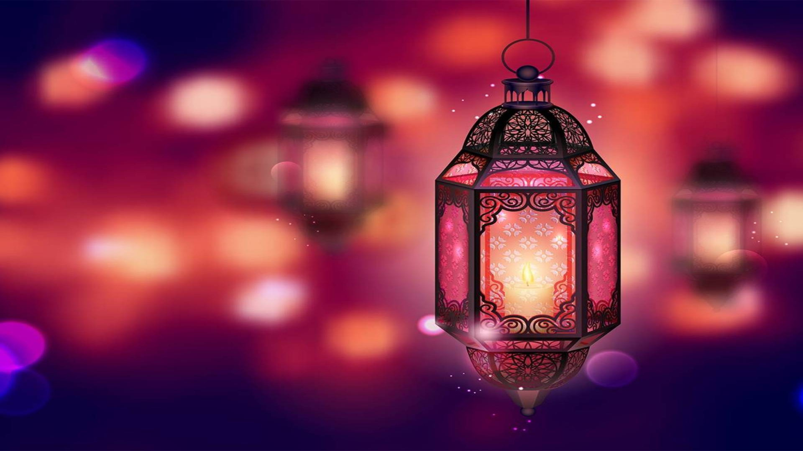
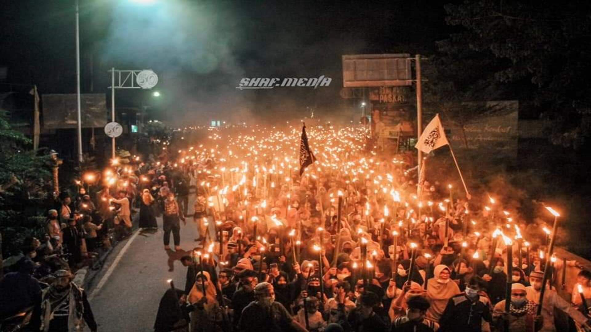
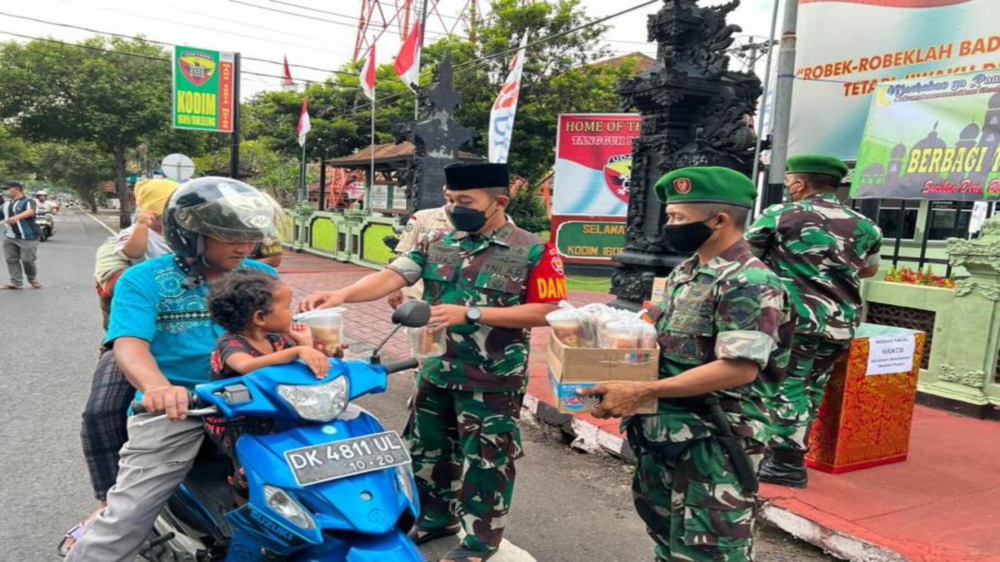
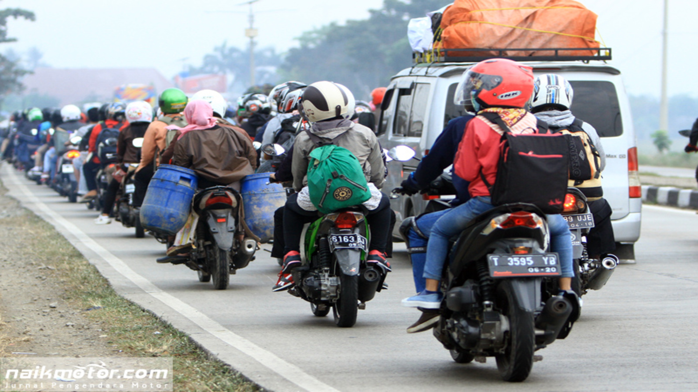

Bulan yang penuh rahmat dan ampunan dari Allah SWT, mari kita manfaatkan waktu ini untuk memperbaiki diri dan mendekatkan diri kepada-Nya. Bulan yang menguji kesabaran dan ketakwaan kita, mari kita bersabar dalam menghadapi segala cobaan dan tantangan yang ada di dunia ini.
Ramadhan
Ramadhan adalah bulan yang sangat istimewa bagi umat Muslim di seluruh dunia. Selama sebulan penuh, mereka berpuasa dari makan, minum, dan hal-hal yang membatalkan puasa dari sebelum fajar hingga matahari terbenam. Puasa bukan hanya menahan lapar dan haus, tetapi juga menahan hawa nafsu dan perbuatan dosa. Dengan berpuasa, umat Muslim berharap dapat meningkatkan ketaqwaan dan keimanan mereka kepada Allah SWT. Selain itu, mereka juga melakukan ibadah-ibadah lain seperti shalat tarawih, tadarus Al-Quran, membayar zakat fitrah, bersedekah, dan berlomba-lomba dalam kebaikan. Ramadhan adalah bulan yang penuh rahmat dan ampunan dari Allah SWT, serta bulan yang menyenangkan hati dan jiwa.

Ramadhan adalah bulan yang sangat istimewa bagi umat Muslim di seluruh dunia. Selama sebulan penuh, mereka berpuasa dari makan, minum, dan hal-hal yang membatalkan puasa dari sebelum fajar hingga matahari terbenam. Puasa bukan hanya menahan lapar dan haus, tetapi juga menahan hawa nafsu dan perbuatan dosa. Dengan berpuasa, umat Muslim berharap dapat meningkatkan ketaqwaan dan keimanan mereka kepada Allah SWT. Selain itu, mereka juga melakukan ibadah-ibadah lain seperti shalat tarawih, tadarus Al-Quran, membayar zakat fitrah, bersedekah, dan berlomba-lomba dalam kebaikan. Ramadhan adalah bulan yang penuh rahmat dan ampunan dari Allah SWT, serta bulan yang menyenangkan hati dan jiwa.
Kegiatan Dan Tradisi
Pawai Obor

Pawai obor adalah tradisi menyambut bulan suci Ramadan atau tahun baru Islam dengan berjalan kaki mengelilingi kampung atau jalan raya sambil membawa obor yang terbuat dari bambu atau lentera, diiringi dengan alat musik dan salawat atau takbir. Tradisi ini memiliki makna dan manfaat sebagai ajang silaturahmi, nilai edukasi, perantara dakwah, pembersihan diri, dan semangat tahun baru bagi orang-orang yang mengikutinya.
Pawai obor adalah salah satu tradisi yang ada di Indonesia untuk menyambut bulan suci Ramadan atau tahun baru Islam. Tradisi ini sudah ada sejak zaman dahulu dan masih terus dilestarikan hingga sekarang. Pawai obor biasanya dilakukan oleh sekelompok orang yang berjalan kaki mengelilingi kampung atau jalan raya sambil membawa obor yang terbuat dari bambu atau lentera. Obor tersebut dianggap sebagai simbol cahaya yang menerangi jalan dan membersihkan hati dari dosa dan noda.
Pawai obor juga diiringi dengan alat musik seperti gendang atau rebana dan salawat atau takbir sebagai ungkapan rasa syukur dan kegembiraan. Salawat adalah pujian kepada Nabi Muhammad SAW, sedangkan takbir adalah pengakuan bahwa Allah SWT adalah Tuhan yang Maha Besar. Dengan mengucapkan salawat dan takbir, orang-orang dapat mendekatkan diri kepada Allah SWT dan Nabi Muhammad SAW serta memohon keberkahan dan ampunan-Nya.
Pawai obor memiliki banyak makna dan manfaat bagi orang-orang yang mengikutinya. Salah satunya adalah sebagai ajang silaturahmi, dimana banyak orang dalam satu kampung, kampung ke kampung, atau kampung ke kota dapat bertemu dan bersilaturahmi dalam agenda tersebut. Silaturahmi adalah menjalin hubungan baik dengan sesama manusia, terutama dengan keluarga, tetangga, saudara seiman, dan seluruh makhluk. Dengan bersilaturahmi, orang-orang dapat saling mengenal, menghormati, membantu, dan menyayangi satu sama lain.
Selain itu, pawai obor juga memiliki nilai edukasi, terutama bagi anak-anak. Dengan mengikuti pawai obor, anak-anak dapat belajar tentang Islam dan tradisinya yang indah. Mereka dapat melihat bagaimana orang-orang beribadah kepada Allah SWT dengan cara yang menyenangkan dan menarik. Mereka juga dapat mendengar ceramah atau pengajian dari para ulama atau ustadz yang memberikan ilmu agama dan motivasi. Dengan demikian, anak-anak dapat meningkatkan pengetahuan dan ketaqwaan mereka kepada Allah SWT.
Terakhir, pawai obor juga menumbuhkan semangat tahun baru bagi orang-orang yang mengikutinya. Dengan menyambut bulan suci Ramadan atau tahun baru Islam dengan penuh antusiasme dan harapan, orang-orang dapat merasakan momen pergantian tahun yang spesial. Mereka dapat bersyukur atas nikmat-nikmat yang Allah SWT berikan kepada mereka di tahun sebelumnya dan berdoa agar kehidupan mereka akan semakin baik di tahun mendatang. Mereka juga dapat memperbaiki diri dari segala kesalahan dan kekurangan yang mereka lakukan di tahun sebelumnya dan berusaha untuk menjadi lebih baik di tahun mendatang.
Berbagi Takjil
Kegiatan bagi-bagi takjil adalah tradisi yang ada di Indonesia untuk membagikan makanan ringan dan minuman kepada orang-orang yang berpuasa di bulan Ramadan. Kegiatan ini bermakna dan bermanfaat sebagai cara untuk menyegerakan berbuka puasa, mendapatkan pahala yang besar, menunjukkan kepedulian terhadap sesama, menjalin silaturahmi dan ukhuwah islamiyah, dan menyebarkan pesan-pesan Islam.

Kegiatan bagi-bagi takjil adalah tradisi yang ada di Indonesia untuk membagikan makanan ringan dan minuman kepada orang-orang yang berpuasa di bulan Ramadan. Kegiatan ini bermakna dan bermanfaat sebagai cara untuk menyegerakan berbuka puasa, mendapatkan pahala yang besar, menunjukkan kepedulian terhadap sesama, menjalin silaturahmi dan ukhuwah islamiyah, dan menyebarkan pesan-pesan Islam.
Kegiatan bagi-bagi takjil adalah salah satu tradisi yang ada di Indonesia untuk membagikan makanan ringan dan minuman kepada orang-orang yang berpuasa di bulan Ramadan. Kegiatan ini biasanya dilakukan di masjid, mushola, jalan raya, atau tempat-tempat lain yang ramai dikunjungi oleh orang-orang yang berpuasa. Kegiatan ini bermula dari arti kata takjil yang berarti mempercepat dalam berbuka puasa, sesuai dengan sunnah Rasulullah SAW yang menyegerakan berbuka puasa ketika adzan maghrib berkumandang.
Kegiatan bagi-bagi takjil memiliki banyak makna dan manfaat bagi orang-orang yang melakukannya maupun yang menerimanya. Salah satu makna dan manfaatnya adalah mendapatkan pahala yang besar, sesuai dengan hadits Rasulullah SAW yang menyatakan bahwa barangsiapa memberi buka puasa bagi orang yang berpuasa, maka ia mendapatkan pahala seperti orang yang berpuasa, tanpa mengurangi pahala orang yang berpuasa sedikit pun. Hal ini menunjukkan bahwa Islam adalah agama yang menghargai dan menghormati orang-orang yang beribadah kepada Allah SWT.
Selain itu, kegiatan bagi-bagi takjil juga menunjukkan kepedulian terhadap sesama, terutama kepada orang-orang yang kekurangan atau membutuhkan. Dengan membagikan takjil, orang-orang dapat menyalurkan rasa empati dan kasih sayang kepada sesama manusia, terlepas dari agama, suku, atau golongan mereka. Hal ini dapat membantu orang-orang yang berpuasa untuk merasakan kehangatan dan kenyamanan saat berbuka puasa. Hal ini juga dapat meringankan beban mereka yang tidak mampu untuk membeli makanan atau minuman untuk berbuka puasa.
Selanjutnya, kegiatan bagi-bagi takjil juga menjalin silaturahmi dan ukhuwah islamiyah, yaitu hubungan baik antara sesama muslim. Dengan membagikan takjil, orang-orang dapat saling mengenal, menghormati, dan menyapa satu sama lain. Hal ini dapat meningkatkan rasa persaudaraan dan kebersamaan di antara umat Islam. Hal ini juga dapat menumbuhkan rasa toleransi dan kerukunan antara umat beragama. Dengan demikian, kegiatan bagi-bagi takjil dapat menjadi sarana untuk menyebarkan pesan-pesan Islam, yaitu ajaran-ajaran yang berasal dari Allah SWT dan Rasulullah SAW.
Mudik

Mudik adalah kegiatan pulang kampung yang dilakukan oleh sebagian masyarakat Indonesia menjelang hari raya besar keagamaan. Kegiatan ini bermakna dan bermanfaat untuk menjaga hubungan keluarga, menyambung akar budaya, menyegarkan pikiran dan jiwa, serta membantu perekonomian lokal. Kegiatan ini juga merupakan hasil dari sejarah urbanisasi yang terjadi di Indonesia sejak masa kemerdekaan.
Kegiatan mudik adalah kegiatan yang dilakukan oleh sebagian masyarakat Indonesia yang tinggal di kota atau di luar kampung halamannya untuk pulang ke kampung halaman. Kegiatan ini biasanya dilakukan menjelang hari raya besar keagamaan, seperti Idul Fitri, Idul Adha, Natal, atau Tahun Baru. Kegiatan ini bermula dari sejarah urbanisasi yang terjadi di Indonesia sejak masa kemerdekaan, di mana banyak orang dari berbagai daerah mengadu nasib ke kota untuk mencari pekerjaan dan penghidupan yang lebih baik. Lalu, ada saatnya para perantau tersebut kembali ke kampung halamannya untuk melepas rindu dengan keluarga dan sanak saudara. Kegiatan itu disebut dengan mudik.
Kegiatan mudik memiliki banyak makna dan manfaat bagi orang-orang yang melakukannya maupun yang menerimanya. Salah satu makna dan manfaatnya adalah menjaga hubungan keluarga, yaitu dengan bertemu dan bersilaturahmi dengan keluarga dan sanak saudara yang jarang ditemui. Hal ini dapat meningkatkan rasa kasih sayang dan keharmonisan di antara anggota keluarga. Selain itu, mudik juga dapat menjadi sarana untuk mempererat tali silaturahmi dengan tetangga, teman, atau masyarakat setempat.
Selain itu, kegiatan mudik juga menyambung akar budaya, yaitu dengan mengenal dan menghormati asal-usul dan tradisi yang ada di kampung halaman. Hal ini dapat memperkaya pengetahuan dan wawasan tentang budaya lokal dan nasional. Dengan mudik, orang-orang dapat belajar tentang sejarah, adat istiadat, bahasa daerah, seni budaya, kuliner, atau tempat-tempat wisata yang ada di kampung halaman. Hal ini juga dapat menumbuhkan rasa cinta tanah air dan kebanggaan sebagai warga negara Indonesia.
Selanjutnya, kegiatan mudik juga menyegarkan pikiran dan jiwa, yaitu dengan menikmati suasana dan pemandangan yang berbeda dari kota. Hal ini dapat mengurangi stres dan kepenatan akibat rutinitas pekerjaan atau perkuliahan. Dengan mudik, orang-orang dapat merasakan udara segar, hijau pepohonan, birunya langit dan laut, atau indahnya gunung dan sawah. Hal ini juga dapat memberikan kesempatan untuk beristirahat, bersantai, bermain, atau berolahraga bersama keluarga dan teman-teman.
Terakhir, kegiatan mudik juga membantu perekonomian lokal, yaitu dengan mengeluarkan uang untuk transportasi, akomodasi, makanan, oleh-oleh, atau sumbangan. Hal ini dapat meningkatkan pendapatan dan kesejahteraan masyarakat lokal. Dengan mudik, orang-orang dapat mendukung usaha-usaha mikro, kecil, dan menengah yang ada di kampung halaman. Hal ini juga dapat memberikan kontribusi bagi pembangunan infrastruktur dan fasilitas umum yang ada di kampung halaman.